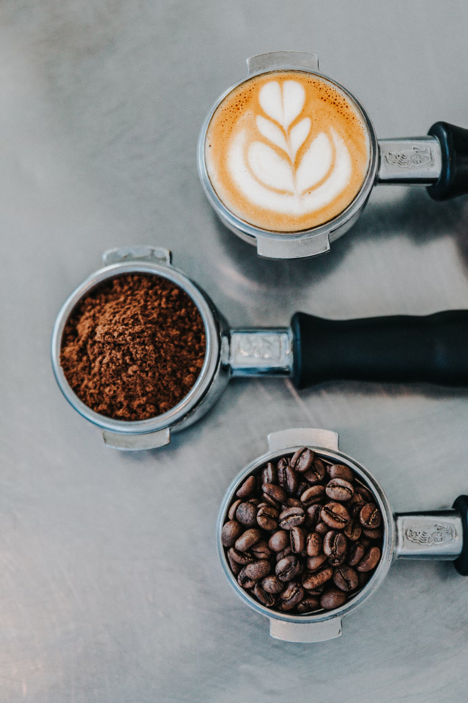

Tipos de cafe y variedades
Cuando se habla de variedades y tipos de café no estamos hablando de lo mismo. a variedad se refiere al origen y especie del grano que se cosecha y los tipos son las bebidas que se han inventado a lo largo de los años con esos distintos granos. Hoy te explicaremos cuáles son las variedades y tipos de cafés más populares en el mundo.
Variedades y origen
En realidad, los tipos de grano de café que se conocen hasta el momento se pueden agrupar tan solo en 4 categorías:
- Arábigo
- Robusta
- Libérica
- Excelsa
Sin embargo, los más conocidos y comercializados a nivel mundial son los dos primeros.
Café arábica o arábigo: Es el tipo de grano que conquista hasta casi un 80% de la producción mundial, sin duda el rey de las tazas de café. Procedente del sur de Etiopía, en los primeros años de su cultivo únicamente se aprovechaban sus hojas para preparar té. La concentración de cafeína de estos granos, caracterizados por ser claros y grandes, es de un 1-1,5%, lo que supone un valor bajo. Su sabor es suave y agradable al paladar, que recuerda en ocasiones a aromas silvestres y frutos secos, incluso a toques ácidos. El café Arábica se considera de tipo gourmet.
Café robusta: Se trata de un grano de café procedente de un arbusto mucho más resistente en comparación con el anterior, por lo que es posible cultivarlo en una mayor variedad de terrenos. La concentración de cafeína en el grano supera bastante a la del café Arábica, siendo ésta de un 2-3% aproximadamente, en un grano considerablemente más pequeño. Esta característica convierte al café Robusta en una bebida fuerte y amarga, con un olor menos perfumado y una textura áspera. Su degustación suele recordar a frutos secos y madera. Generalmente se utiliza para blends (mezclas), a diferencia del anterior, que es de tipo gourmet.
Café libérica: Procedente de los alrededores de Monrovia, en Liberia, se trata de un grano de café que proporciona un sabor particularmente diferente, por lo que su consumo no está muy extendido. No obstante, es un tipo de grano que es muy apreciado en países escandinavos.
Café excelsa: Fue descubierto por primera vez en el lago Chad, en África. A pesar de ser muy similar al café Libérica en el tamaño del árbol y sus hojas, difiere en que sus flores, frutos y granos son más pequeños, así como de una calidad inferior. Tanto este tipo de grano como el anterior tienen realmente un consumo residual.